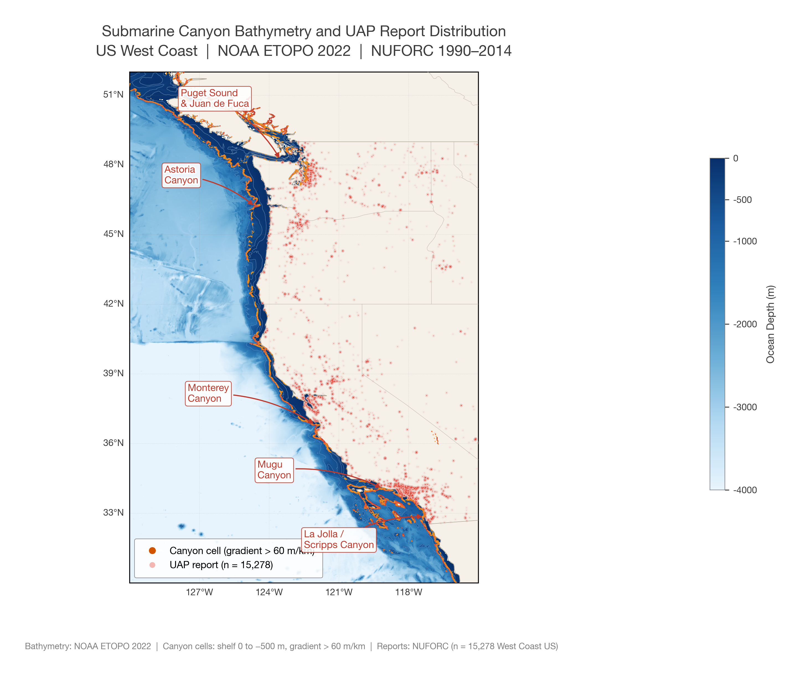
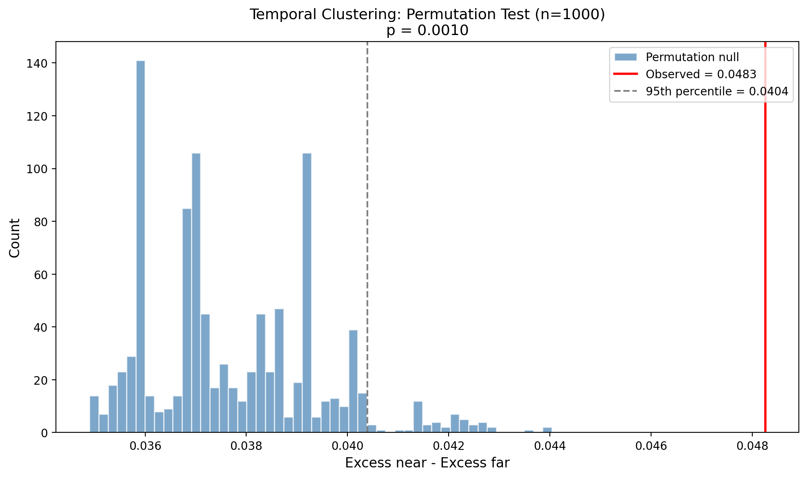
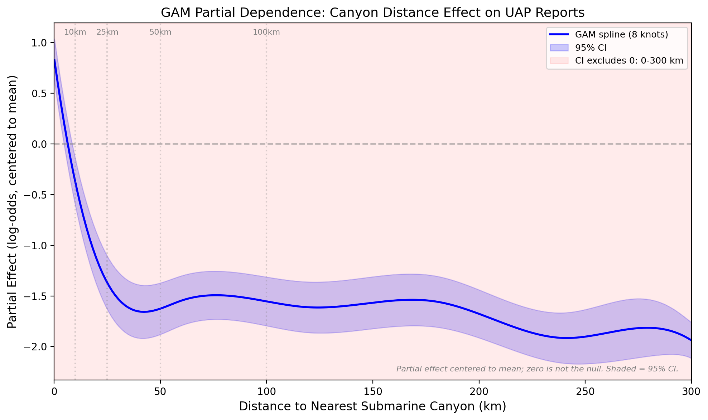
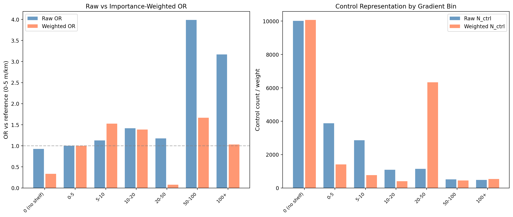
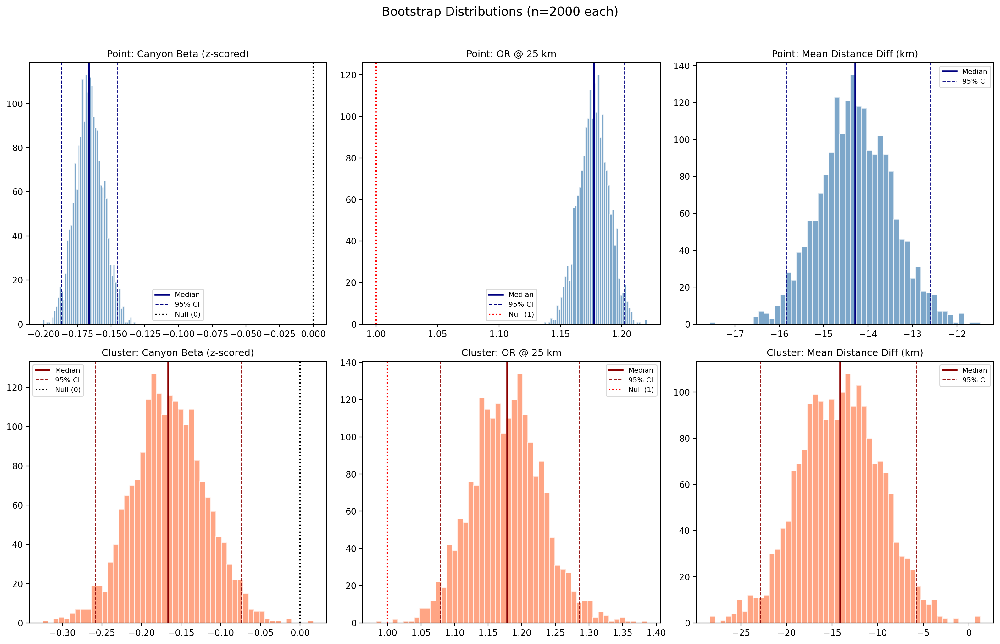

Something concentrates near steep underwater canyons off the US West Coast. We measured it.
80,332 reports · 25 years · One signal
What public data says about something that officially doesn't exist.
Between 1990 and 2014, the National UFO Reporting Center collected over 80,000 sighting reports across the United States. When those reports are mapped against NOAA ocean-floor data and adjusted for population density, a pattern emerges along the West Coast: areas near steep submarine canyon features—underwater slopes exceeding 60 metres per kilometre—show significantly elevated report rates. The effect concentrates in three canyon systems where steep underwater terrain reaches unusually close to shore: Puget Sound (6.8× the expected rate), San Diego (9.8×), and Monterey Bay (2.75–4.80×). The remaining West Coast averages only 1.4×. The association holds across different time periods, different canyon definitions, and independent post-2014 data that was never used to build the model.
The same test on the East and Gulf Coasts finds nothing. There, submarine canyons sit 100 to 400 kilometres offshore, far beyond the continental shelf edge. No land-based observer could report anything above them. The geographic asymmetry is unexplained.

A permutation test asks a simple question: if the association between canyon proximity and report density were random, how often would we see a result this strong? The observed statistic is compared against 1,000 random shuffles of the data. If the real value sits far outside the distribution of shuffled values, the association is unlikely to be coincidence.
In this case, fewer than 1 in 10,000 shuffles produced a result as strong as the observed one. The p-value of 0.0001 is not a belief. It is a measurement.




Every result on this page can be reproduced from public data using the linked code.
Approximately 65 Python scripts, fully public, MIT license. All data sources documented with download instructions.
As covered by: Daily Mail — “UFO hotspots cluster near underwater canyons off the US West Coast”
Preprint forthcoming.